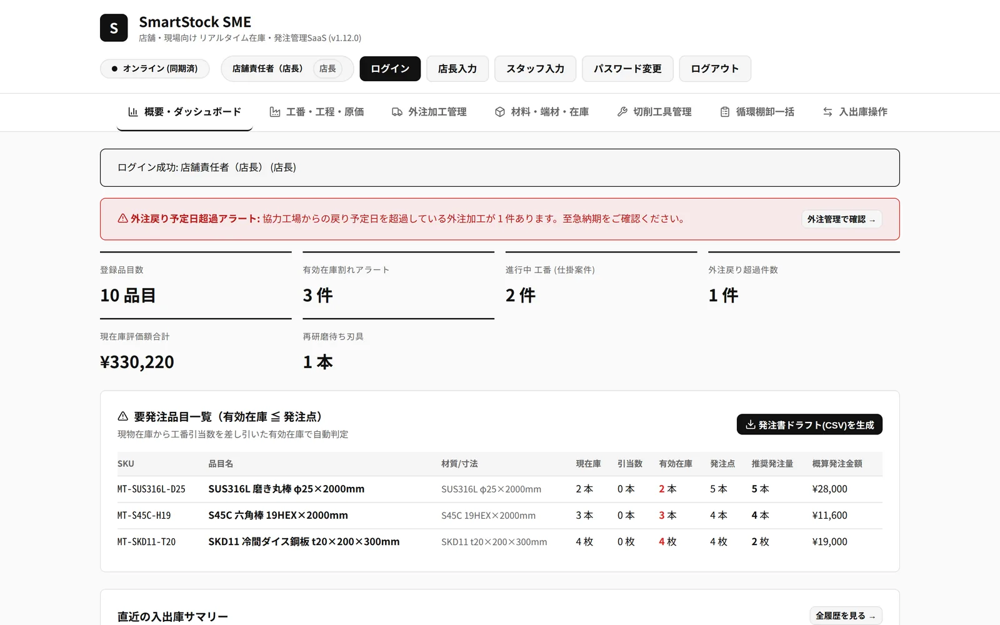
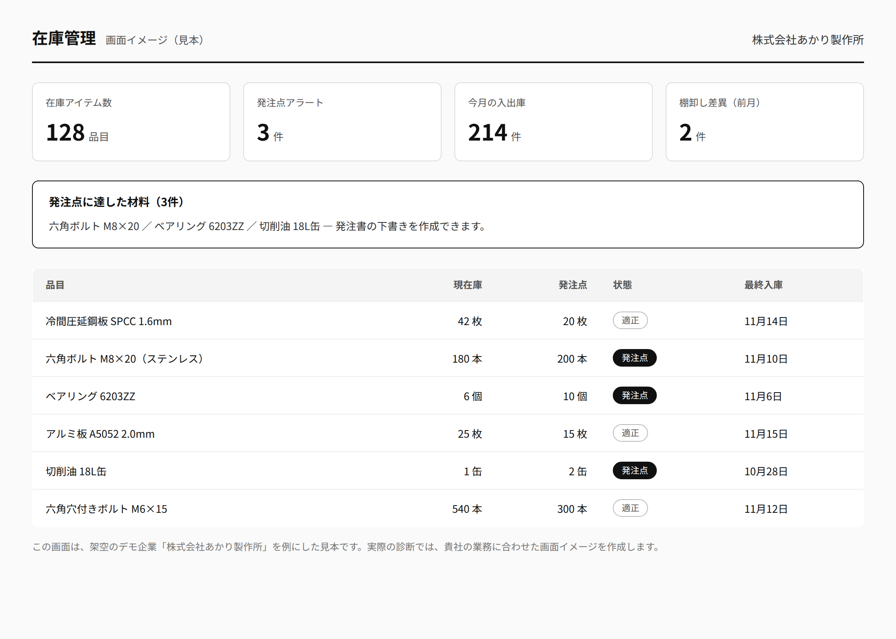

製品（SaaS）／在庫管理
SmartStock SME
部品・材料の在庫を工番と結びつけて管理する中小製造業向けアプリです。事業所内のPCに導入し、店内ネットワークのPCやスマートフォンから使います。業務データが外部サーバーへ送信されることはありません。
- 在庫・有効在庫の管理と発注アラート・発注書ドラフト（CSV）
- 工番と工程の進捗、外注の持出・戻り管理
- 図面のリビジョン管理と工番別の原価集計
ネットショップ・中小製造業の在庫管理と専用アプリ開発
ネットショップのモール間での二重管理・売り越しや、中小製造業の工番と結びついた部品・材料の在庫管理まで。現場向け在庫管理アプリ「SmartStock SME」と、御社の手順に合わせた専用アプリの受託開発で、Excelと紙の管理にかかる手間を引き受けます。
届くもの：業務診断メモ1枚＋貴社向け画面イメージ1枚（契約前提なし）

画面はデモデータで撮影した実際の動作画面です（SmartStock SME 概要ダッシュボード）。
表計算ソフトや紙と記憶に頼る運用では、日々の確認や付け合わせに時間がかかり続けます。当てはまる項目にチェックを入れてみてください。
1つでも当てはまる場合は、まず「どこをアプリ化すると楽になるか」を無料業務診断で整理できます。
無料業務診断に申し込む（約3分）Excelや紙で回している業務について、アプリ化できる点を整理した「業務診断メモ」1枚と「貴社向けの画面イメージ」1枚を無料でお送りします。申し込みは約3分、返送は3営業日以内。診断のあとに契約を前提とする必要はありません。

業務診断メモ（見本）
「今の困りごと」「アプリ化できる業務（優先順位つき）」「進め方と費用感の概算」の3点を、貴社専用にA4・1枚へ整理します。

貴社向け画面イメージ（見本）
診断メモで挙げた業務が、実際にどんな画面で回るようになるかを1枚の画面イメージにしてお付けします。
※ 見本は架空のデモ企業「株式会社あかり製作所」を例にしたものです。実際の診断では、貴社の公開情報とお申し込み内容をもとに貴社専用で作成します。
まず在庫管理を製品として用意し、製品では合わない業務手順やネットショップ・周辺業務は受託開発で個別に対応します。
部品・材料の在庫を工番と結びつけて管理する中小製造業向けアプリです。事業所内のPCに導入し、店内ネットワークのPCやスマートフォンから使います。業務データが外部サーバーへ送信されることはありません。
既製品では合わない工程管理・受発注・在庫連携や記録の仕組みを、その会社の手順に合わせて作ります。開発工程にAIを活用して作るコストを抑え、小規模な現場でも導入を検討できる専用ソフトウェアを提供します。
まずは現在の管理方法と困っている点をお聞きし、作る範囲と金額・期間の目安をご提示したうえで進めます。
無料業務診断またはメールで相談を受け付けます。現在の管理方法と、困っている点を教えてください。
作る範囲と金額、期間の目安を先に提示します。内容が合わなければ、この時点で終了しても問題ありません。
AIを活用して開発し、導入・初期設定と現場向けの使い方説明まで行います。納品後の不具合対応や機能追加も相談できます。
品質4ゲート：受託開発の納品物は「構文チェック → テスト実行 → セキュリティ静的検査 → 実起動ヘルス確認」の4段階をすべて通過したものだけに限定しています。

確認に落ちた場合は自動で修復を試み、それでも直らないものは無理に進めず人の確認に回します。製品の「SmartStock SME」についても、変更のたびに自動テスト（350件以上）を全件実行し、実機での動作確認を行っています。
基準となる料金体系です。料金は機能に合わせて相談可能です。
初期費用 198,000円 （税別）
＋ 月額保守 9,800円（税別）
初期費用 98,000円 （税別）
＋ 月額保守 9,800円（税別）
※ 料金は機能に合わせて相談可能です。まずは無料業務診断で範囲と概算を確認できます。
SmartStock SMEは事業所内のPCに導入して動かすため、インターネット接続は必須ではありません。同じネットワーク内のPCやスマートフォンのブラウザから利用でき、データが外部のサーバーへ送られることはありません。
製品には、原価集計や発注書ドラフトなどをCSV形式で出力する機能があります。導入時のデータ移行については、現在の表の形式を確認したうえで、対応できる範囲を相談時に決めます。
大阪を拠点としています。打ち合わせはオンラインでも対応できます。
下記のお問い合わせ先メールアドレスへ、現在の管理方法と困っている点を書いて送ってください。
無料業務診断では、業務診断メモ1枚と貴社向け画面イメージ1枚を3営業日以内にお送りします。製品の導入や受託開発のご相談はメールでも受け付けています。